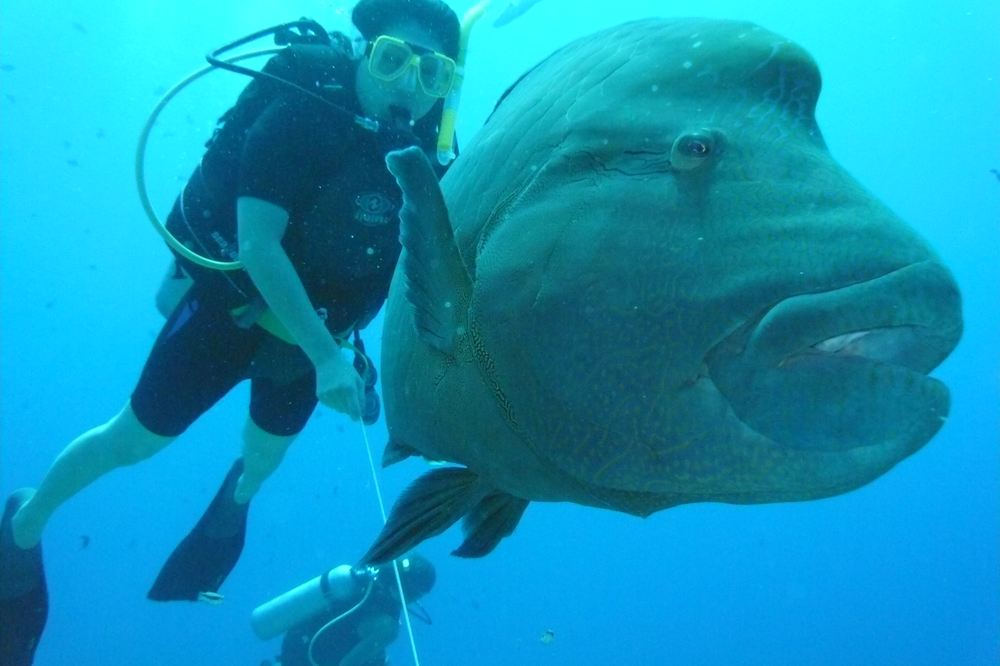

Some of my interests: Horseback riding, hiking, disc golf, memes, comedy shows/movies (anything funny, really), fashion, reading, watching documentaries, sleeping, trying new foods, traveling, airplanes, the ocean, the French language, and different cultures. There are probably more that I can't think of at the moment.
My Favorite Foods: Eggrolls, snickers, Thai food, Indian food, and Vezzo's Pizza (AKA the best)
My Favorite Color: Yellow
Favorite Movies: Scary Movie I, any Louis C.K. Stand Up, Step Brothers, Talladega Nights, Taken, IT, Anchorman, Shaun of the Dead, Superbad, Hot Fuzz, 21 Jumpstreet, Ted, Dirty Grandpa, and Bridesmaids.
My Favorite TV Shows: Trailer Park Boys, That 70s Show, Family Guy, American Dad, Keeping Up With the Kardashians, Life of Kylie, The Cleveland Show, Girl Boss, Chelsea, Bojack Horseman, and Freaks and Geeks
Before college, I worked at Polkki Furniture in North Monmouth.
I once met a Humphead Wrasse at the Great Barrier Reef and it was the biggest fish I have ever seen. Here is a picture of one next to a person to show the size comparison. A cool fact I learned in National Geographic Magazine about these fish is that some of them will change gender at 15 years old.
